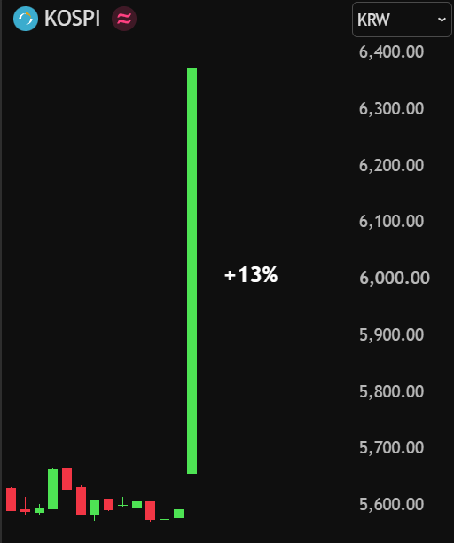
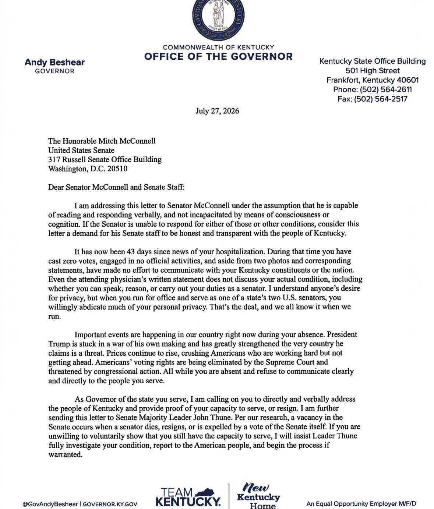

In a Senate hearing on the pandemic's origins, Anthony Fauci invoked his Fifth Amendment right and declined to testify — not selectively, but to nearly everything put to him, down to what day of the week it was. Chairman Rand Paul, noting that Fauci's Biden-era pardon does not shield conduct after it was signed, said the committee had directed the witness to answer and would move within the week to certify him in contempt. The theatre around the table — a disruptive attorney removed by security, Josh Hawley's blistering cross-examination — nearly obscured the substance: whether gain-of-function work continued, and whether intelligence money ever flowed through NIH. Days earlier, RFK Jr. revealed that Fauci's private journal surfaced in emails he had sent himself, and Florida's attorney general opened a state-level investigation the federal pardon cannot touch.
With Fauci refusing to answer under subpoena, Sen. Rand Paul told the witness the committee would vote next week on a resolution certifying his contempt — arguing that a privilege 'unsupported because of your pardon' cannot be used to stonewall a congressional investigation. The pardon, Paul stressed, covers what came before it, not the act of obstructing Congress now.
▶ Watch on XJosh Hawley pressed that a witness has no right to obstruct by pleading the Fifth, accusing Fauci of profiting personally while Americans died — as Fauci declined even to name the color of his tie.
▶ Watch on XRFK Jr. says Fauci's private diary was discovered in emails, after he mailed years of government-computer journal entries to himself for a planned book.
Florida AG James Uthmeier launches a state investigation into Fauci's 'lack of candor' before Congress — charges the autopen pardon does not cover.
▶ Watch on XFauci quietly joined a stealth mRNA vaccine startup in 2023; the Biden administration then awarded it $28M, and Eli Lilly is now buying it for up to $1.55B.
In the largest such move in over two years, Japan and the United States coordinated to drive the dollar down 3.3% against the yen — Treasury Secretary Bessent calling the currency 'very undervalued' and warning that 'excess volatility is not healthy.' Even after Tokyo spent a record $73.4 billion buying yen last quarter, the currency had touched a 40-year low. By week's end Treasury was informing banks it might intervene again, and Washington was selling euros to buy yen outright.
The U.S. 30-year Treasury yield climbed to 5.27%, its highest since 2007 — the run-up to the last financial crisis.
The Fed left rates in the 3.50–3.75% band on a 9–3 vote — the longest pause since the 2008 cycle — as three members dissented toward a hike and the President demanded cuts.
U.S. publicly held debt now exceeds 100% of GDP for the first time since World War II.
After South Korea sold dollars to strengthen the won, the KOSPI opened up 13% — roughly $390B added — with Samsung and SK Hynix surging 24% and 28%.

Bessent calls Trump Accounts 'the most successful program launch in government' — 7M families enrolled, a target of 70M — and pitches an 'ownership society.'
▶ Watch on XBaby boomers now hold at least $93 trillion in assets — more than Gen X and millennials combined, per Visa.
“You got rich while people were dying.”— Sen. Josh Hawley, to Dr. Fauci
Spain's Civil Guard chief declared the border with its North African enclave of Ceuta had 'totally collapsed' as thousands of migrants poured across from Morocco within hours — a surge the account ties to a fresh Spanish amnesty. Video showed crowds streaming over the frontier; by the next day the scenes had turned uglier still, with reports of graves desecrated and residents fighting back in the streets.
▶ Watch on XA viral dispatch describes migrants smashing graves in Ceuta and hurling the pieces at residents, who fight back with whatever they can find — asking where the Spanish military is.
▶ Watch on XRome signals it will suspend the Schengen agreement with Spain over the influx, with Meloni vowing to stop the 'invasion' by any means necessary.
Footage purports to show French Navy helicopters assisting migrants leaving French beaches for Britain.
▶ Watch on XIn Ireland, migrant reception centers under construction are being set alight.
▶ Watch on XHHS released the U.S. Government Policy for Stopping High-Risk Life Sciences Research, ending federal support for gain-of-function work the administration says could 'threaten lives' and national security. Secretary Kennedy framed it as replacing weak oversight with 'clear, enforceable safeguards' — a bookend, arriving the same week as the Fauci hearings, to a decade-long fight over the origins of the pandemic.
Kennedy says GAVI has agreed to remove mercury preservatives from the vaccines it provides to tens of millions of children in Africa and Asia.
Kennedy launches a government-backed cooking show, 'The Real Food Show,' aiming to prove healthy family meals can be made for under $5 a serving.
Montana will let patients access experimental drugs that have cleared only a Phase I trial — making some therapies available long before FDA approval.
The administration plans to end a $3.6B subsidy that has blunted Medicare Part D premiums; roughly 75% of the plan's 25M enrollees could see 2027 premiums rise.
Earlier this month, more than 30 firms across traditional finance and digital markets participated as we successfully processed U.S. trades using DTC-tokenized assets.
See what happened on July 15: https://t.co/CLgmCNENsX
▶ Watch on XWith a floor-ready crypto market-structure bill awaiting a vote, Bessent accused Senate Democrats of 'choosing politics on the cusp of a major victory' for U.S. leadership.
XRP becomes available to retail investors in Hong Kong for the first time.
SpaceX landed the show: on Flight 13, Starship executed a landing burn and its first-ever intact soft splashdown, captured in drone footage that made the rounds all week. Regulators leaned in the same direction, with DOT and the FAA pledging faster launch approvals and 'less red tape' to sharpen the American edge in spaceflight.
An engineer unveils OpenDerm, an open-source robot that images and tracks the skin in 3D over time — reframing early melanoma detection as a home-robotics task.
▶ Watch on XOpenAI gives scientists, mathematicians and engineers free access to its frontier models — 10,000 researchers now, scaling toward 100,000 by 2027.
▶ Watch on XThe administration bars new foreign-made robot vacuums from the U.S. market, citing national-security concerns.
Lindsey Graham's casket was carried into the Capitol rotunda, where JD Vance, Majority Leader John Thune and a large gathering paid their respects — a somber marker in a week otherwise dominated by hearings and markets, and one that quietly reopens the question of the Senate's next generation.
▶ Watch on XElon Musk is preparing a major political spending push to help Republicans hold Congress in the 2026 midterms, per Axios.
Kentucky Gov. Andy Beshear publicly calls on Mitch McConnell to prove his 'capacity to serve' or resign.

The FBI said Operation Blackout took down four of the largest scam compounds on earth — $15.2 billion seized, thousands of trafficked workers freed, eight thousand internet terminals shut off, and 10,000 Americans spared the loss of their savings. 'The mission is results,' Director Patel wrote. 'The end.'
▶ Watch on XThe White House says U.S. homicides fell 18% in the first half of 2026, on pace for the lowest murder rate in at least 126 years.
DHS says it has located 146,000 unaccompanied migrant children — many, it says, victims of trafficking placed with unvetted sponsors.
▶ Watch on XU.S. intelligence assesses Iran was likely behind coordinated cyberattacks on more than 30 Minnesota water systems.
The White House touts a rule eliminating some 200,000 non-domiciled commercial licenses for foreign drivers, tying it to a historic low in traffic fatalities.
The week closed as it began — with the presidency at its center. A single White House frame from the Aspen cabin, captioned only '45/47,' let the image do the talking.